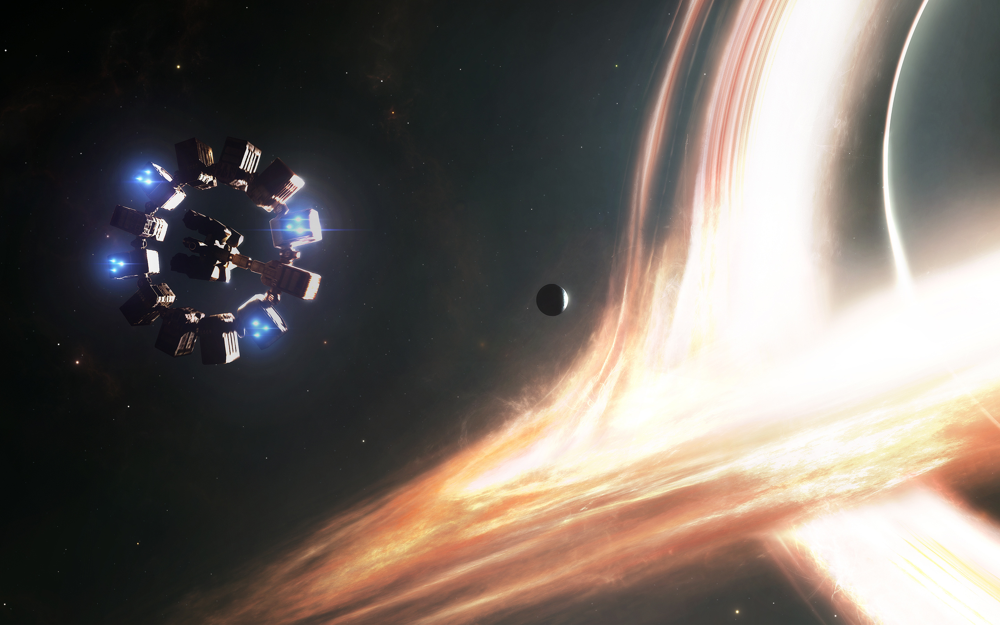
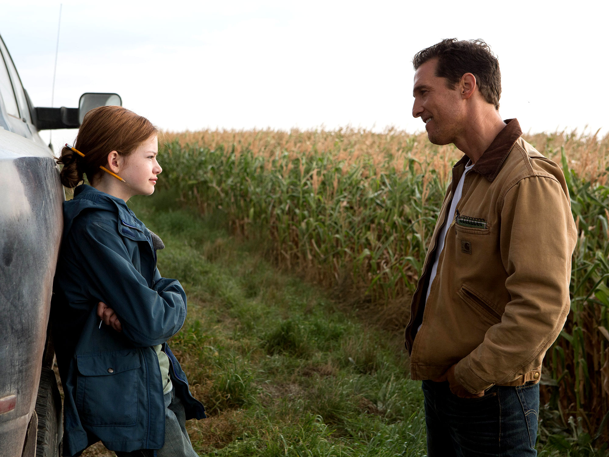

SINOPSIS
Un mundo que se apaga
En un futuro cercano, la humanidad enfrenta su extinción. Una plaga agrícola llamada "el Tizón" está consumiendo los últimos cultivos del planeta, provocando tormentas de polvo masivas y una caída crítica en los niveles de oxígeno. La sociedad ha involucionado hacia una cultura puramente agraria; la ingeniería y la exploración espacial son vistas como lujos inútiles del pasado, e incluso se enseña en las escuelas que los viajes a la Luna fueron montajes propagandísticos.
Joseph Cooper (Matthew McConaughey), un exingeniero y piloto de pruebas de la NASA reconvertido en granjero, vive frustrado por este destino. Junto a su suegro y sus dos hijos, Tom y Murph, lucha por mantener su granja mientras percibe que el mundo está cerrando sus puertas definitivamente

El llamado del espacio
Tras una serie de anomalías gravitatorias inexplicables que ocurren en el dormitorio de su hija Murph, Cooper descubre las coordenadas de una instalación secreta. Allí encuentra los restos de la NASA, que opera en la sombra bajo la dirección del Profesor Brand (Michael Caine). Brand le revela una verdad aterradora: la generación de Murph será la última en sobrevivir en la Tierra. Sin embargo, hay una esperanza. Un agujero de gusano —un túnel en el tejido del espacio-tiempo— ha aparecido misteriosamente cerca de Saturno, colocado allí por una inteligencia desconocida ("Ellos"). Este portal conduce a otra galaxia donde se han identificado tres planetas potencialmente habitables orbitando un agujero negro colosal llamado Gargantúa

La Misión Endurance
Cooper es reclutado para pilotar la nave Endurance. La misión consiste en viajar a través del agujero de gusano, visitar los tres planetas previamente explorados por una misión de avanzada (la Misión Lázaro) y determinar cuál puede albergar a la humanidad.
El plan tiene dos vertientes:
Plan A: Si el Profesor Brand logra resolver una compleja ecuación gravitatoria, la humanidad podrá ser evacuada de la Tierra en estaciones espaciales masivas.
Plan B: Si el Plan A falla, la Endurance lleva miles de embriones humanos para colonizar un nuevo mundo desde cero, dejando atrás a quienes aún están en la Tierra.

El desafio de la Relatividad
El gran conflicto de la película no son solo los peligros del espacio, sino la dilatación del tiempo. Debido a la inmensa gravedad de Gargantúa, el tiempo transcurre de forma mucho más lenta en los planetas cercanos al agujero negro que en la Tierra. Cooper se enfrenta a una decisión desgarradora: cada hora que pase explorando estos nuevos mundos podría significar años o décadas de vida perdidos con sus hijos. La película se convierte así en una carrera desesperada contra el reloj cósmico, donde el equipo —que incluye a la científica Amelia Brand (Anne Hathaway) y a los ingeniosos robots TARS y CASE— deberá navegar entornos extremos (planetas de agua infinita, nubes de hielo y fuerzas gravitatorias brutales) mientras intentan descifrar si el amor es, como sugiere Amelia, una fuerza que trasciende las dimensiones conocidas.

Conclusión: Más allá de las estrellas
Interstellar no es solo una odisea visual sobre la supervivencia de la especie, sino una exploración íntima sobre el sacrificio de un padre y la tenacidad del espíritu humano. En un universo regido por leyes físicas inalterables y una gravedad implacable, la película plantea que el amor podría ser la única variable capaz de atravesar las dimensiones del tiempo y el espacio. Es una invitación a mirar hacia arriba y recordar que, aunque nuestro tiempo sea finito, nuestra curiosidad y nuestra capacidad de conectar no conocen límites.
